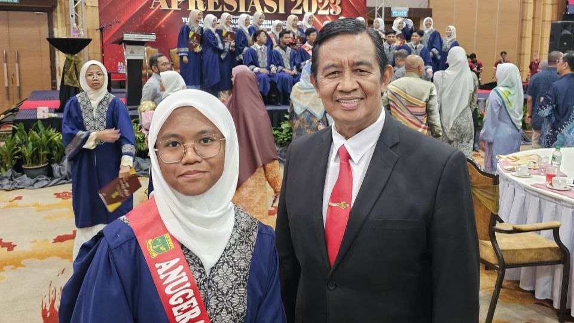
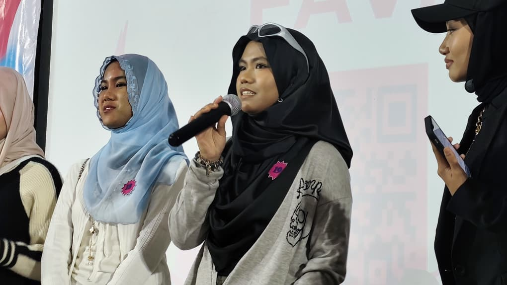

Leadership & committees
Secretary · TVPSS KISAS
Role summary
- Served as Secretary of TVPSS at Kolej Islam Sultan Alam Shah, supporting student media and broadcasting activities.
- Helped plan, document and coordinate team activities, programmes and content work.
- Managed administrative matters and information-sharing among team members.
- Developed organisational, communication, teamwork and media-coordination skills in a student-led organisation.
Moments



